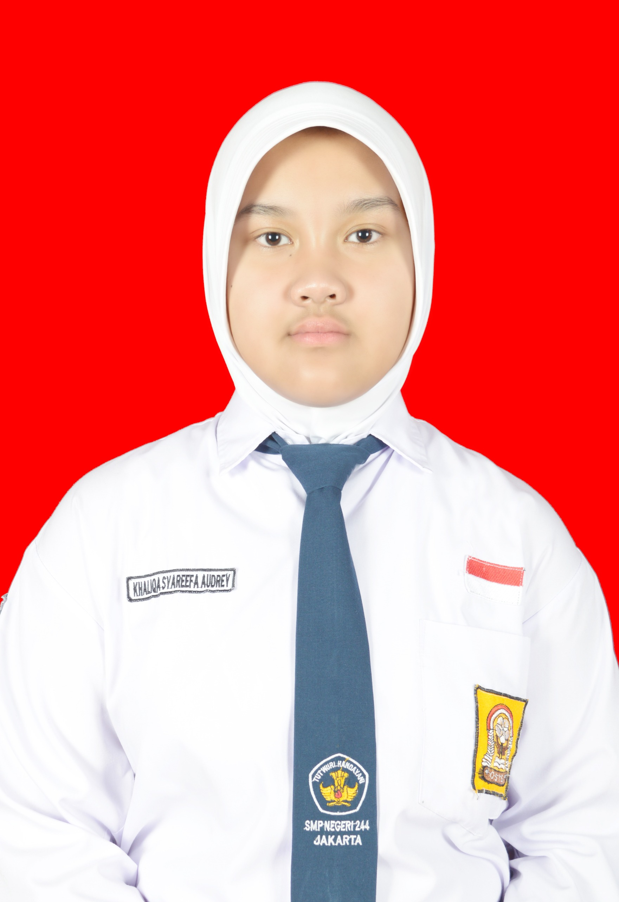

KSAKhaliqa Syareefa Audrey
Pembaca buku, calon pengacara
📚 Membaca buku
🎵 Pop
🌿 Indie folk
Tentang aku
- Tempat, tanggal lahir
- Jakarta, 18 Juli 2012
- Jenis kelamin
- Perempuan
- Agama
- Islam
- MBTI
- ISTJ
🎂
🎀
🌙
🧠
Favoritku
- Hobi
- Membaca buku
- Genre musik favorit
- Pop, indie folk
- Film favorit
- Beauty and the Beast
- Buku favorit
- Midnight in December
📖
🎧
🌹
🌌
Cita-citaku
Pengacara (lawyer) ⚖️